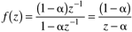

| [ Team LiB ] |
|
M16.5 Discrete IMCThe design of discrete IMCs is similar to that of the continuous IMC design procedure detailed in Chapter 8. The primary difference is that the factorization is performed on a discrete-time (Z-domain) model. Factorize into good stuff and bad stuff the discrete model where contains zeros outside the unit circle and zeros inside the unit circle that negative. The reason for this is that negative zeros inside the unit circle cause oscillatory poles in the controller if not removed. Make certain that the numerator of is one order less than the denominator polynomial. Also, form an "all-pass" in by including a pole at 1/zi for each zi outside the unit circle. Make certain that "gain" (found by setting z = 1) of the "bad stuff" is equal to one, while the gain of the "good stuff" is equal to the gain of the unfactored transfer function. The design procedure is then analogous to that developed for continuous IMC in Chapter 8. The controller is the inverse of the "good stuff" times a discrete filter to make the controller physically realizable (numerator and denominator polynomials are the same order). where f(z) has the following form  where a is a discrete tuning parameter. It is related to the continuous IMC filter factor by where Dt is the sample time. The discrete IMC procedure is slightly more complex than the continuous-time case for a couple of reasons. First of all, the continuous system parameters such as time constants are much easier to interpret than the discrete-time parameters; discrete parameters are a function of the sample time of the digital system. Also, it is easier to keep mental track of gains in continuous-time, since setting s = 0 normally eliminates most terms in a transfer function. In discrete-time, setting z = 1 results in the sum of a number of coefficients, and is simply not as natural to handle. The following example presents a step-by-step application of the discrete IMC procedure. Example M16.3Consider the van de Vusse reactor model studied in Module 5; this was also used as an example for the conversion between model types in Module 4. The continuous transfer function is The discrete-time model (for a sample time of 0.1 minutes) is This can be written in discrete pole-zero form as and it is easy to verify that the gain (found by setting z = 1) is 0.5851, which is consistent with the continuous time model (found by setting s = 0). Now, the first step of the factorization procedure is to remove the zeros that are outside the unit circle (there is a zero at 1.334), as well as the negative zeros inside the unit circle (there are none in this particular problem)
The next step is to form the "all-pass" Next, make certain that the gain of the "bad stuff" is 1 and that the gain of the "good stuff" is the same as the gain of the original transfer function The IMC is obtained by inverting the good stuff and using a first-order filter to make it realizable: where the discrete tuning parameter, a, is related to the continuous tuning parameter, l, by Here, we compare the responses of the discrete control system with the continuous system. For this sample time and choice of l = 0.2 min, there is virtually no difference, as shown in Figure M16-3. The block diagram and m-file used for this simulation is presented in Appendix M16.2. Figure M16-3. Comparison of continuous and discrete IMC for l = 0.2 minutes. Discrete sample time, Dt = 0.1 minutes.Problem M16.3 Choose Exercise 2, 3, or 4 from the Additional Exercises at the end of this module for further study of the IMC design procedure. Exercise 2 is a straightforward first-order example where there are no particular performance limitations. Exercise 3 illustrates the importance of factoring out negative zeros inside the unit circle. Exercise 4 is an example where the continuous-time transfer function is third-order, but minimum-phase (no RHP zeros or time delays) so there is no limitation to achievable IMC performance. The discrete-time model, however, has a zero outside the unit circle. This poses substantial performance limitations for the discrete-time system. |
| [ Team LiB ] |
|